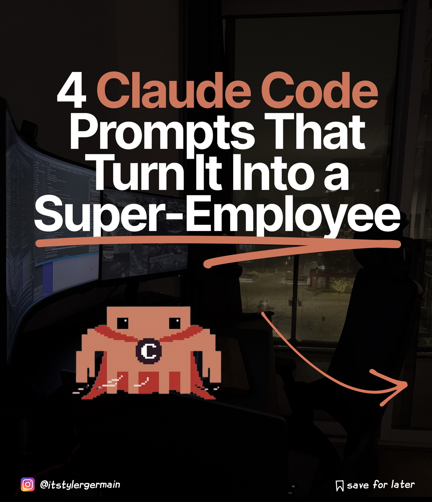
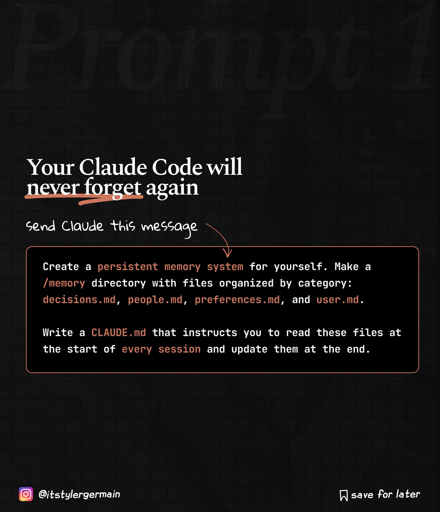
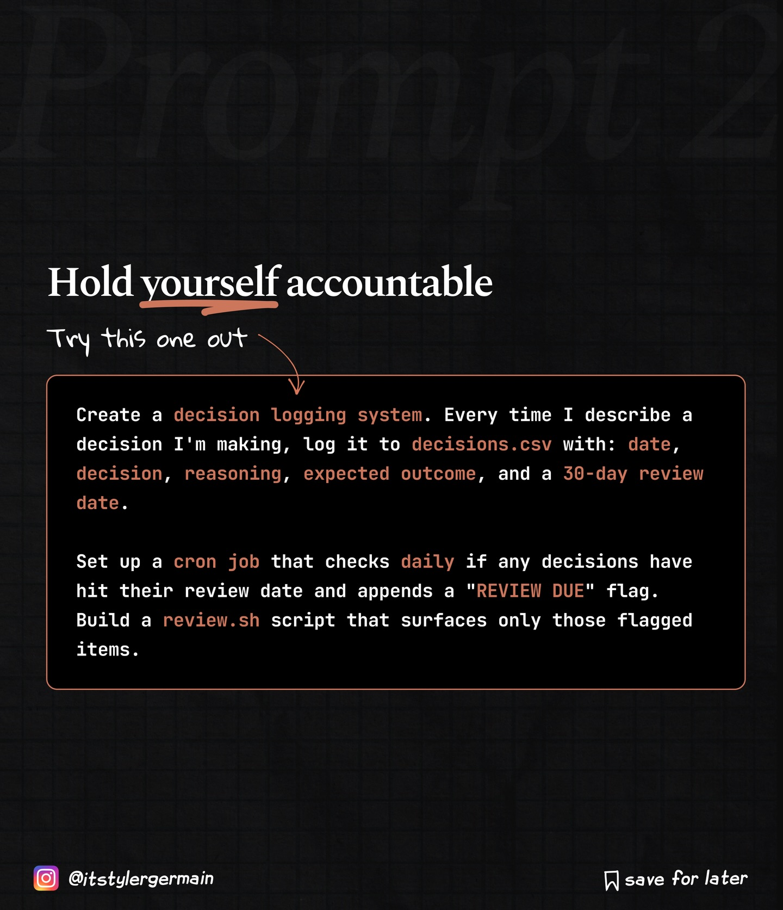
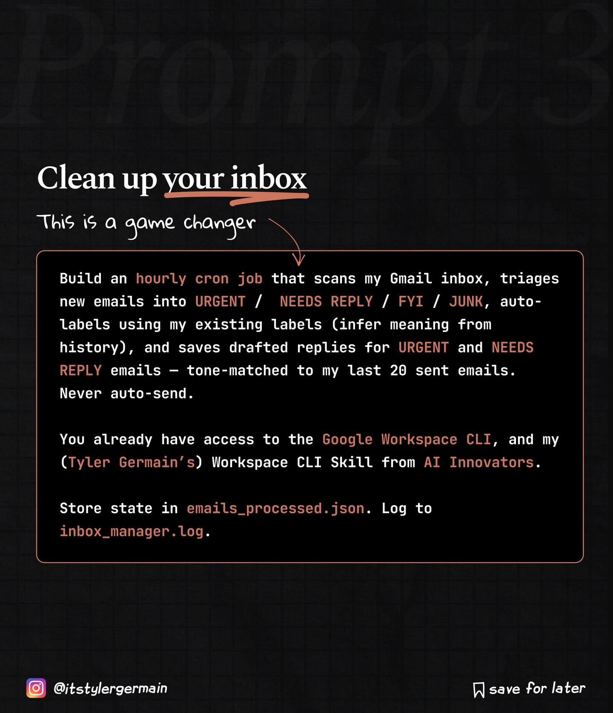
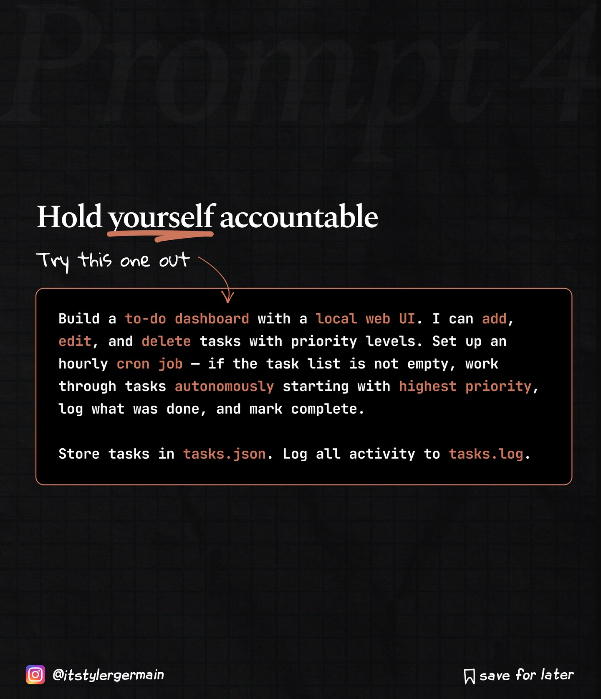

Instagram Post

4 Claude Code Prompts That Turn It Into a...
carousel (6 slides) (enriched by ClaudeClaw)
Summary
4 Claude Code Prompts That Turn It Into a Super-Employee ... | 4 Claude Code Prompts That Turn It Into a Super-Employee ... | Prompt Your Claude Code will never forget again send Clau... | Prompt 2 Hold yourself accountable Try this one out Creat... | Prompt Clean up your inbox This is a game changer Build a... | Prompt 4 Hold yourself accountable Try this one out Build...
1
4 Claude Code Prompts That Turn It Into a Super-Employee @itstylergermaim C save for later
The image displays a dark room with a computer setup and a pixel art character, looking out a window at a snowy street lit by streetlights at night.
2
4 Claude Code Prompts That Turn It Into a Super-Employee @itstylergermaim C save for later
The image displays a dark room with a computer setup, a pixel art character, and a window revealing a snowy outdoor scene with lights at night.
3
Prompt Your Claude Code will never forget again send Claude this message Create a persistent memory system for yourself. Make a /memory directory with files organized by category: decisions.md, people.md, preferences.md, and user.md. Write a CLAUDE.md that instructs you to read these files at the start of every session and update them at the end. @itstylergermain save for later
A social media post on a dark grid background provides instructions for creating a persistent memory system for an AI named Claude.
4
Prompt 2 Hold yourself accountable Try this one out Create a decision logging system. Every time I describe a decision I'm making, log it to decisions.csv with: date, decision, reasoning, expected outcome, and a 30-day review date. Set up a cron job that checks daily if any decisions have hit their review date and appends a "REVIEW DUE" flag. Build a review.sh script that surfaces only those flagged items. @itstylergermain save for later
A social media post on a dark, grid-patterned background presents a programming challenge about creating a decision logging system with a cron job and review script.
5
Prompt Clean up your inbox This is a game changer Build an hourly cron job that scans my Gmail inbox, triages new emails into URGENT / NEEDS REPLY / FYI / JUNK, auto-labels using my existing labels (infer meaning from history), and saves drafted replies for URGENT and NEEDS REPLY emails - tone-matched to my last 20 sent emails. Never auto-send. You already have access to the Google Workspace CLI, and my (Tyler Germain's) Workspace CLI Skill from AI Innovators. Store state in emails_processed.json. Log to inbox_manager.log. @itstylergermain save for later
The image displays a dark background with a grid pattern and faint "Prompt" text, featuring a title "Clean up your inbox" with an underline, a subtitle "This is a game changer," and a large text box detailing an automated email management system, with social media handles and a "save for later" icon at the bottom.
6
Prompt 4 Hold yourself accountable Try this one out Build a to-do dashboard with a local web UI. I can add, edit, and delete tasks with priority levels. Set up an hourly cron job - if the task list is not empty, work through tasks autonomously starting with highest priority, log what was done, and mark complete. Store tasks in tasks.json. Log all activity to tasks.log. @itstylergermain save for later
The image displays a programming or productivity challenge with instructions for building a to-do dashboard, set against a dark, grid-patterned background.
All slides



